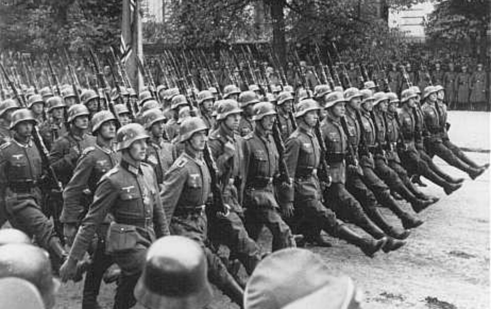
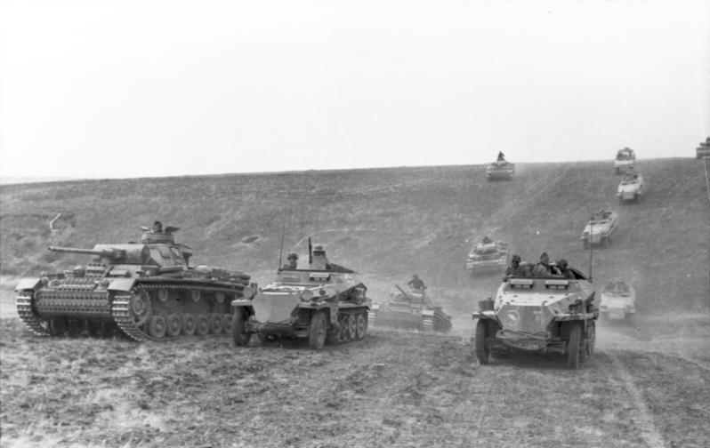

Invasion of Poland

Throughout the late 1930's, Poland had begun the ruthless persecution and massacres of ethnic Germans living in the Danzig region and on the borders of Poland and Germany. With Britain and France having pledged their allegiance to Poland
in the case of war, Edward Rydz Smigly, the commander-in-chief of the Polish Armed Forces had no fear of German retaliation. However, in 1939, Adolf Hitler would launch an invasion of Poland to return the German territory of Danzig into German hands
and to cease the persecution and deaths of innocent Germans in the region. This would mark the beginning of the Second World War, as Britain and France shortly after declared war on Germany.
Invasion of France

During the Invasion of Poland, the Wehrmacht (German Army) unveiled a never before seen military strategy called Blitzkrieg, or lightning war. It involves the usage of combined arms warfare (armoured vehicles, aircraft, and infantry cooperating). This brilliant new strategy brought down Poland within a matter of weeks and was once gain used during the Invasion of France in June of 1940. However, following the first world war, France had built an impenetrable line of fortifications known as the Maginot Line along the French-German border, blocking any route of invasion from Germany. The French had however left the French border with Belgium and the low countries exposed, not realizing this mistake. Germany would completely bypass the Maginot Line by invading the low countries and entering Northern France and capturing Paris within a matter of weeks, leading to the fall and surrender of France. During the same year, Germany would also successfully invade and capture Norway in order to maintain important ports for the export of iron ore from Sweden vital to the German war effort.
Invasion of the Soviet Union